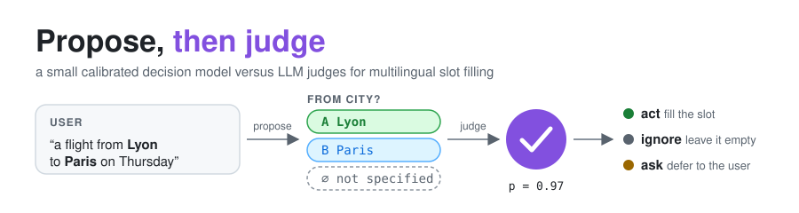

Offenes Modell · 46 Sprachen · CC BY-SA 4.0
 Ein Projekt des LabCom LAMAE
Ein Projekt des LabCom LAMAE
Vorschlagen, dann urteilen.
Ein kleiner Richter, der weiß, wann er fragen muss.
laya-slotjudge-m46 füllt die Slots eines aufgabenorientierten Dialogs – Stadt, Datum, Gericht, Kontakt … –, indem er unter den Werten wählt, die günstige Extraktoren vorschlagen, oder nicht angegeben antwortet. Seine Wahrscheinlichkeit ist kalibriert: Ihr Assistent kann handeln, ignorieren oder nachfragen. Mit rund 0,3 Mrd. Parametern ist er genauer als LLM-Richter mit 27 bis 180 Mrd. Parametern.
